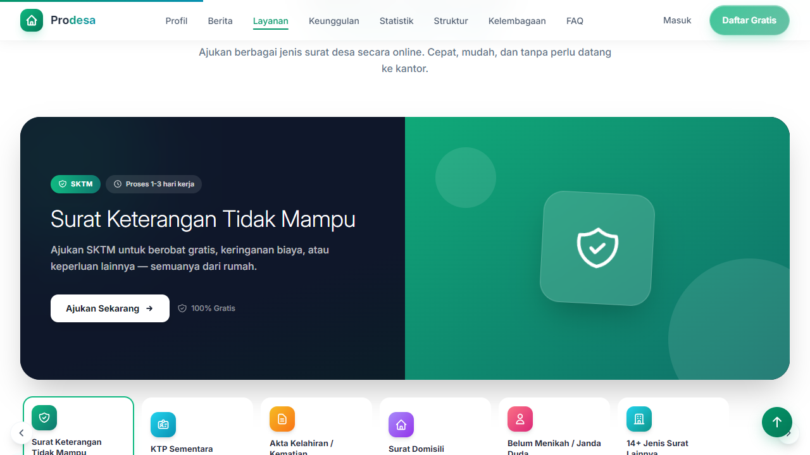
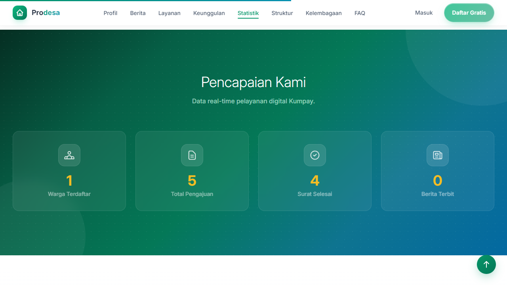
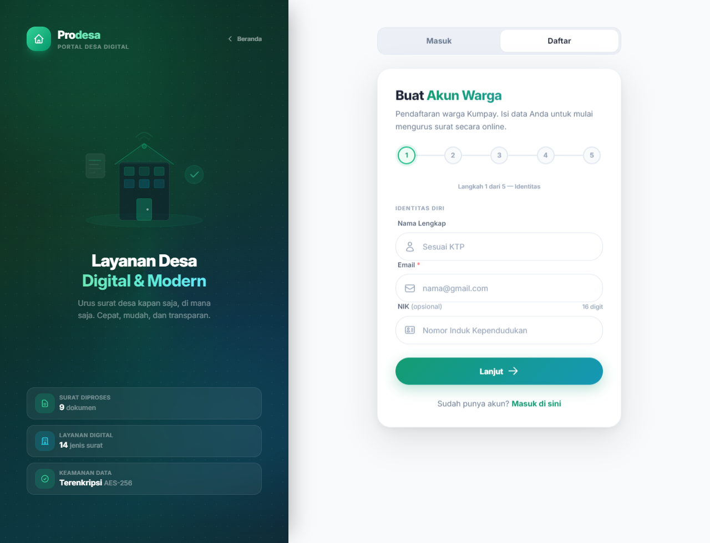

Konteks
Desa Kumpay masih mengelola surat-menyurat secara manual: warga datang ke kantor, formulir diisi di atas kertas, dan status pengajuan hanya bisa ditanyakan langsung. Prodesa memindahkan alur ini ke web.
Sistem pelayanan administrasi desa: pengajuan surat online dengan workflow approval berjenjang, RBAC 8 role, versioning dokumen, verifikasi QR, dan dashboard analitik per peran.



State machine dengan transisi yang digerbangi permission, bukan sekadar pemeriksaan role.
Desa Kumpay masih mengelola surat-menyurat secara manual: warga datang ke kantor, formulir diisi di atas kertas, dan status pengajuan hanya bisa ditanyakan langsung. Prodesa memindahkan alur ini ke web.
Alur manual membuat warga tidak tahu posisi pengajuannya, arsip mudah hilang, dan tidak ada jejak audit siapa memverifikasi apa. Setiap jenis surat punya format dan syarat berbeda sehingga petugas juga sering salah template.
Semua jenis surat dijadikan data, bukan hardcode: template isi, field form, aturan validasi, dan syarat dokumen disimpan di tabel letter_configs sebagai JSON. Alur persetujuan menjadi state machine yang setiap transisinya digerbangi permission Spatie.
Laravel 11 monolith dengan Blade + Tailwind. Form dinamis digenerate dari config; setiap revisi menyimpan snapshot data dan salinan PDF sebagai versi baru secara non-destruktif, lengkap dengan diff. Surat selesai mendapat hash verifikasi publik ber-QR, notifikasi dikirim via Telegram dan webhook, serta antrean pengambilan dikelola dengan scan QR.
8 role (Super Admin, Operator Pelayanan, Sekretaris Desa, Kepala Desa, RT, RW, Warga, Lembaga) dengan 36 permission granular via Spatie, dipaksa di route middleware dan di dalam state machine.
submitted → verified → approved_operator → approved_sekdes → approved_kades → completed, plus jalur revision yang hanya bisa di-resubmit pemohon dan jalur rejected.
14 jenis surat didefinisikan sebagai data: body_template dengan placeholder, fields JSON bertipe text/date/select lengkap rules validasi, syarat dokumen, dan kode klasifikasi.
Setiap revisi membuat versi baru: snapshot data_tambahan dan salinan PDF _v{n} di disk private. Restore tidak menimpa, ia membuat versi baru dan mencatat activity log.
Surat selesai punya hash verifikasi publik yang dirender jadi QR; petugas mengelola antrean pengambilan dengan scan QR per nomor.
Dashboard 4 chart Chart.js: tren bulanan, jenis surat populer, approval/rejection rate; monitoring queue internal (waiting/failed jobs) dengan retry.
Prodesa live di desa.ranggamrw.my.id dan dipakai melayani warga Desa Kumpay: 14 jenis surat dinamis, alur persetujuan berjenjang yang tercatat di approval history, dan dashboard khusus untuk Kepala Desa, Sekretaris, serta warga.